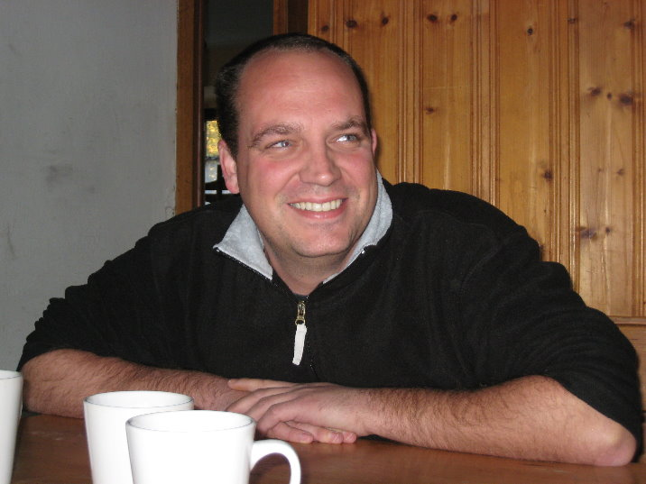

<!doctype html>

<html>
</html>
<head>
 <title>Galileo Galilei Stamm Messestadt-Riem</title>
 <meta name="author" content="Maxi Steidl">
 <link rel="stylesheet" href="../../css/design.css" type="text/css">
 <link rel="shortcut icon" type="image/x-icon" href="lilie.ico">
</head>
<body text="#000000" oncontextmenu="return false" onselectstart="return false" ondragstart="return false" bgcolor="#FFFFCC" link="#FF0000" alink="#FF0000" vlink="#FF0000">
 <div id="content"><br>
<center></center>
<p style="text-align: center;color:000000;"><span style="font-family: 'Comic Sans MS', Chicago, Sans-serif, cursive; font-size: 12pt;">Servus alle miteinander, werd euch hier ein bisschen was &uuml;ber meinen pfadfinderischen Werdegang und ein bisschen &uuml;ber mich erz&auml;hlen.<br><br>
An einem 18.07. erblicke ich die Sonne dieser Welt, ging zur Schule und so weiter. Nu bin ich Tech. Zeichner, Planer und Bau&uuml;berwacher bei einer kleinen Firma in Aschheim. Ich erz&auml;hl euch trotzdem nicht, wie alt ich bin, denn ich mach daraus immer ein kleines Geheimnis, aber auf jeden Fall alt genug.<br><br>
Irgendwann 1984 oder so, bin ich zur Pfarrjugend in Putzbrunn gegangen um dort mit einer Freundin eine Leiterin „Frau Prasch&quot; zu unterst&uuml;tzen. 1986 ist Sie schwer erkrankt und hat nach einem Nachfolger gesucht. Sie hat Pfadfinder in Keferloh gefunden, die sich seit dem Herbst um uns gek&uuml;mmert haben. Dies war mein Einstieg zu den Pfadfindern. Nach zweij&auml;hrigem Dasein als keferloher Pfadfinder haben sich einige Leiter von dort entschieden, einen Stamm in Putzbrunn aufzubauen. Im Herbst 1988 war Gr&uuml;ndungsfest in Putzbrunn. Seit dieser Zeit weg, war ich Materialwart, bis ca. 2000, von da an war ich nur noch Stellvertreter. Mein Leiterversprechen legte ich in Sachsenkam 1991 ab. Bis dahin war ich ein Jahr als Mitleiter t&auml;tig. Bis zu meinem Ausscheiden im Herbst 2001 habe ich alle Stufen der Deutschen Pfadfinderschaft St. Georg durchlaufen. Von 1996 -2001 war ich Stammesvorstand in Putzbrunn.<br><br>
Seit Herbst 2001 habe ich mit dem Felix Nix eine Siedlung in Riem gegr&uuml;ndet. Ein ehemaliger Gr&uuml;ppling von mir, Dominik „Niki&quot; Weber, ist dann ganz spontan mit uns gegangen.<br><br>
Auf jeden Fall m&ouml;chte ich nun noch kurz darauf hinweisen, dass wenn wir ein Lager haben, schon darauf bedacht sind, weibliche Personen, zu denen Ihre Kinder vertrauen aufbauen k&ouml;nnen oder bereits schon haben, mitnehmen. In diesem Sinne m&ouml;chte ich mich bei meiner Freundin Susanne bedanken, die uns auf unserem ersten Lager beistand, ebenso bei Niki's Freundin Babsi.<br><br>
Susanne ist Erzieherin, fr&uuml;her mal im Kinderheim St. Anna in Aying und von daher den Umgang mit Kinder gew&ouml;hnt. Sie wird, wenn es ihr arbeitstechnisch ausgeht, nat&uuml;rlich weiterhin uns zur Seite stehen.<br><br>
Aber nun genug.<br><br>
Ein herzliches Gut Pfad, <br><br>
euer Andal <br><br><br><br>

Andal@DPSG-Riem.de<br><br>
<a href="content_leiter.html">zur&uuml;ck</a>
</p>
</div>
 </body>
</html>